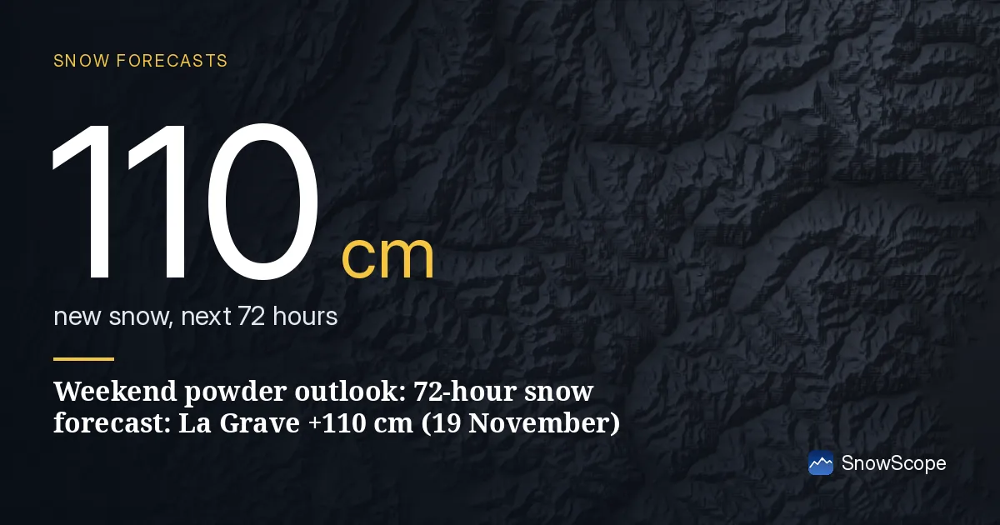
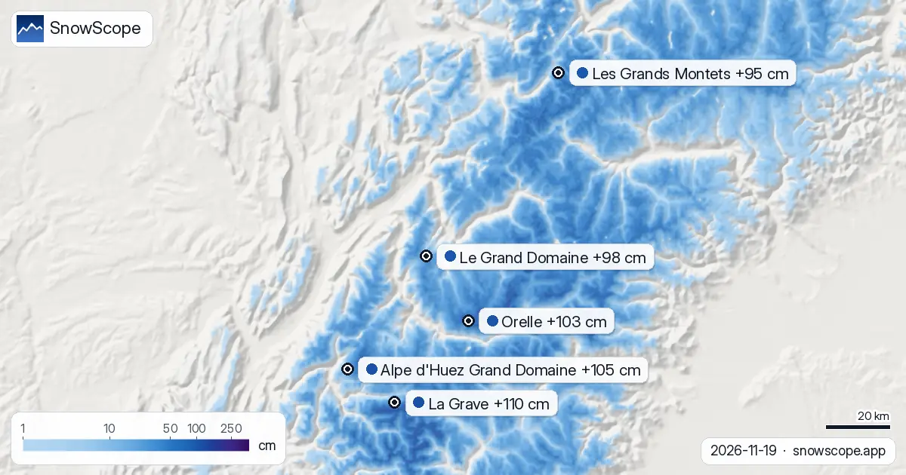
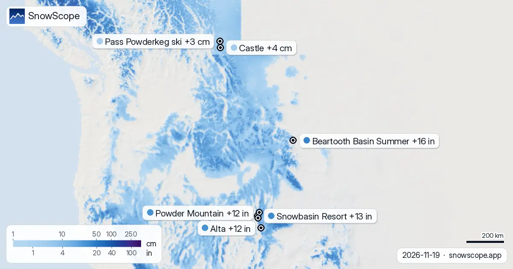

Weekend powder outlook: 72-hour snow forecast: La Grave +110 cm (19 November)
How much snow will the mountains gain? Our table shows the resorts with the most new snow forecast for the next 24 hours and until 22 November, in Europe, Morocco and North America, with the snow line. Snow in the mountains is water held back for spring: what falls now feeds rivers and reservoirs later.
See the live snow forecast for La Grave in the SnowScope appSnow depth, powder alerts and the 3D map, free.
Europe and Morocco
For La Grave (France) the forecast gives 47 cm in the next 24 hours and 110 cm in 72 hours, with a snow line close to 2,900 m. Alpe d'Huez Grand Domaine (France) should get 39 cm in the next 24 hours and 105 cm within 72 hours; the snow line sits near 2,500 m. For Orelle (France) the forecast gives 52 cm in the next 24 hours and 103 cm in 72 hours, with a snow line close to 2,600 m.
| # | Resort | Region | +24 h | +72 h | Snow line |
|---|---|---|---|---|---|
| 1 | La Grave | Alps · France | 47 cm | 110 cm | 2,900 m |
| 2 | Alpe d'Huez Grand Domaine | Alps · France | 39 cm | 105 cm | 2,500 m |
| 3 | Orelle | Alps · France | 52 cm | 103 cm | 2,600 m |
| 4 | Le Grand Domaine | Alps · France | 44 cm | 98 cm | 2,600 m |
| 5 | Les Grands Montets | Alps · France | 53 cm | 95 cm | 2,500 m |
| 6 | Arêches Beaufort | Alps · France | 44 cm | 91 cm | 2,500 m |
| 7 | La Sambuy Seythenex | Alps · France | 43 cm | 89 cm | – |
| 8 | Les Ménuires | Alps · France | 41 cm | 89 cm | 2,600 m |
| # | Resort | Region | +24 h | +72 h | Snow line |
|---|---|---|---|---|---|
| 1 | Beartooth Basin Summer | US West · United States | 3 in (8 cm) | 16 in (40 cm) | 5,600 ft (1,700 m) |
| 2 | Snowbasin Resort | US West · United States | 9 in (24 cm) | 13 in (32 cm) | 5,200 ft (1,600 m) |
| 3 | Powder Mountain | US West · United States | 9 in (23 cm) | 12 in (30 cm) | 5,200 ft (1,600 m) |
| 4 | Alta | US West · United States | 7 in (18 cm) | 12 in (30 cm) | 5,200 ft (1,600 m) |
| 5 | Wasatch Peaks Ranch | US West · United States | 7 in (19 cm) | 11 in (27 cm) | 4,900 ft (1,500 m) |
| 6 | Nordic Valley Resort (Wolf Mount | US West · United States | 8 in (20 cm) | 10 in (26 cm) | 4,900 ft (1,500 m) |
| 7 | Kingvale | US West · United States | 6 in (15 cm) | 10 in (26 cm) | – |
| 8 | Palisades Tahoe Alpine Meadows | US West · United States | 6 in (14 cm) | 10 in (26 cm) | 5,600 ft (1,700 m) |
| # | Resort | Region | +24 h | +72 h | Snow line |
|---|---|---|---|---|---|
| 1 | Castle | Western Canada · Canada | 1 cm | 4 cm | 900 m |
| 2 | Pass Powderkeg ski | Western Canada · Canada | 1 cm | 3 cm | 1,000 m |

Against past winters
At about 3,370 m, La Grave has 88 cm today; a normal 19 November has 76 cm there.
Only one winter in ten has more than 162 cm on this date.
A week ago the same spot had 31 cm.
In past winters the best snow at La Grave usually came mid-April / late April.

United States
Beartooth Basin Summer (United States) should get 3 in (8 cm) in the next 24 hours and 16 in (40 cm) within 72 hours; the snow line sits near 5,600 ft (1,700 m). For Snowbasin Resort (United States) the forecast gives 9 in (24 cm) in the next 24 hours and 13 in (32 cm) in 72 hours, with a snow line close to 5,200 ft (1,600 m). Powder Mountain (United States) should get 9 in (23 cm) in the next 24 hours and 12 in (30 cm) within 72 hours; the snow line sits near 5,200 ft (1,600 m).
Canada
For Castle (Canada) the forecast gives 1 cm in the next 24 hours and 4 cm in 72 hours, with a snow line close to 900 m. Pass Powderkeg ski (Canada) should get 1 cm in the next 24 hours and 3 cm within 72 hours; the snow line sits near 1,000 m.
The next days in the forecast
We place the snow line about 300 m below the forecast freezing level. Above it, the new snow stays dry; below it, wet snow or rain.
A note on measurement: resort values are modelled for the upper slopes, station values are measured at one place on the date given, and both carry some uncertainty.
Forecasts a few days ahead can change: look at the map again the day before you travel.
Tips for skiers
- Be on the first lift after a snowfall: by midday, sun and skiers have already changed the snow.
- When the freezing level rises above the resort, part of the snow melts as it falls: expect wet snow and stay near the top.
- Before you ski off-piste or go touring, read the official avalanche bulletin (links below).
- Snow on the map does not mean a resort is open: check lifts and opening dates on the resort's website.
- Get a powder alert in the SnowScope app to know when La Grave gets fresh snow.
About these numbers
Resort snow depths are the deepest snow on the resort's upper slopes from the SnowScope snow model (about 1 km, run of 18 November); they are estimates for an area, not a measurement at one point. Station values are measurements on the date shown. Forecasts can change. Always read the official avalanche bulletin before going off-piste.
Official avalanche bulletins: EAWS (Europe) · avalanche.org (US) · Avalanche Canada
Cite this report
For research, teaching or the press: the numbers and charts are free to reuse under CC BY 4.0 with this citation.
SnowScope (2026), Weekend powder outlook: 72-hour snow forecast: La Grave +110 cm (19 November), https://snowscope.app/blog/en/2026/11/weekend-powder-outlook-19-november-2026.html, accessed 2026-11-19
SnowScope (Atlas Labs). (2026, November 19). Weekend powder outlook: 72-hour snow forecast: La Grave +110 cm (19 November). SnowScope snow reports. https://snowscope.app/blog/en/2026/11/weekend-powder-outlook-19-november-2026.html
BibTeX
@misc{snowscope2026weekendpowderoutlook19no,
author = {{SnowScope (Atlas Labs)}},
title = {Weekend powder outlook: 72-hour snow forecast: La Grave +110 cm (19 November)},
year = {2026},
month = nov,
howpublished = {\url{https://snowscope.app/blog/en/2026/11/weekend-powder-outlook-19-november-2026.html}},
note = {Published 2026-11-19 11:05 UTC; accessed 2026-11-19}
}· CC BY 4.0 · Methods, data and tools →
La Grave: snow and temperature by height, this winter vs last (tools) →
Follow La Grave
Free: a message when fresh snow is coming, and the forecast every morning.
More snow reports

Les Menuires snow report for 13 November 2026: 28 cm at the top (2838 m), none lying at 2112 m or 1386 m. About 80 cm due at the top in seven days, snow line around 1500 to 1700 m. Why Val Thorens, 450 m higher up the same valley, already has more.

We compared the snow on 10 November with each winter's deepest snow at 46 ski resorts over 46 winters. A snowy start helps, but less than many skiers think.

Himalaya snow cover in November 2026 from NASA MODIS: snow on 610,409 km² of ground above 2,000 m between the Hindu Kush and Bhutan, half the clear ground white from about 4,800 m in Nepal and 3,600 m in the Karakoram. The NDSI explained, plus shadows, cloud and the low autumn sun.